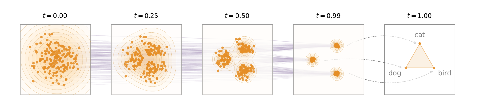
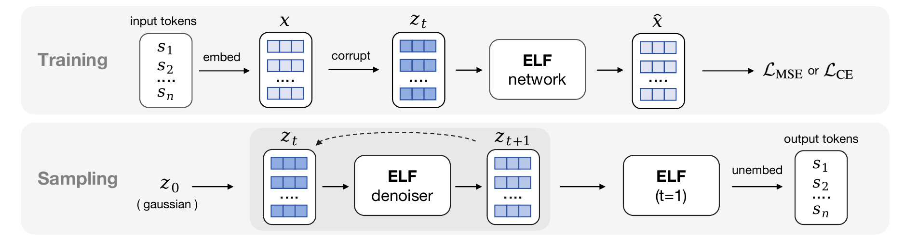
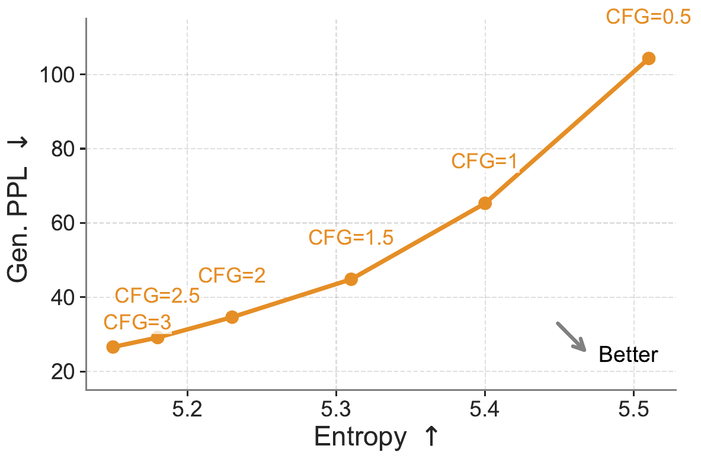
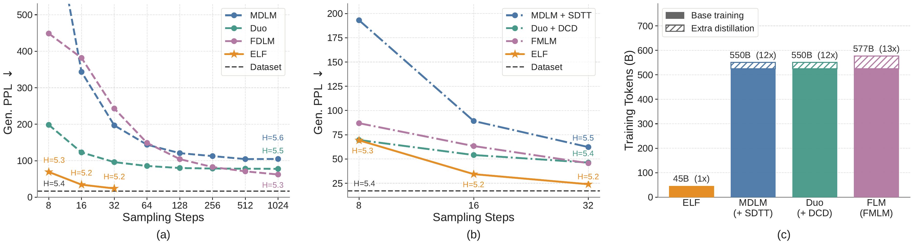
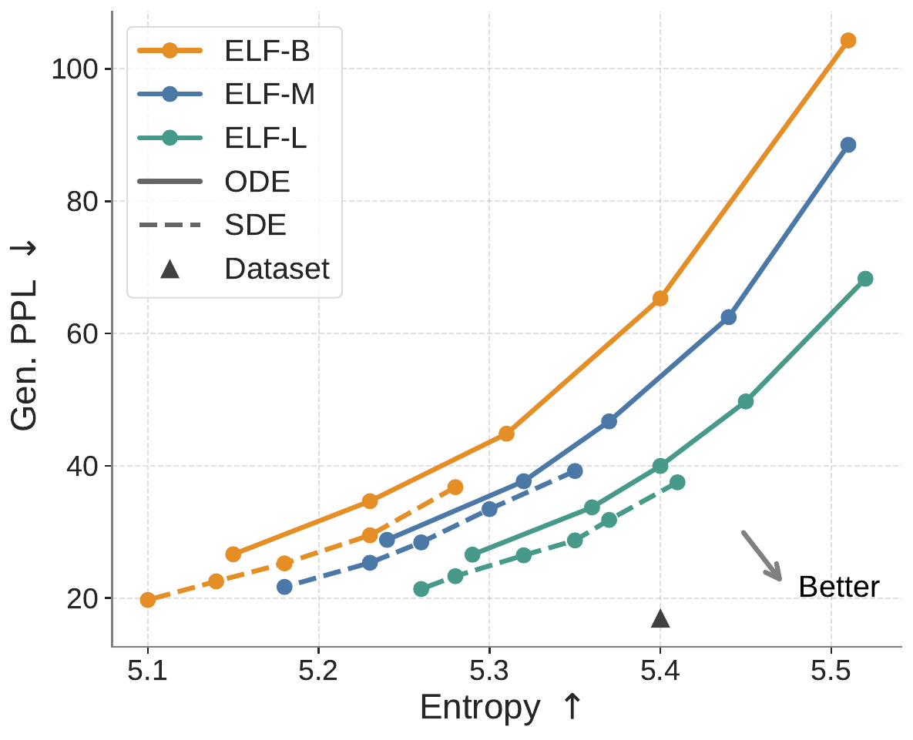
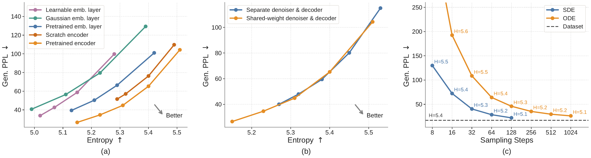

An interactive explainer
ELF: Embedded Language Flows
Diffusion ate images. It ate video. It is starting to eat audio. But on language, the field has split: almost every successful language diffusion model has gone discrete, treating diffusion as probabilistic transitions between tokens. ELF goes the other way — it diffuses in continuous embedding space, only ever leaves at the very last step, and beats every comparable discrete and continuous baseline using 10× less training data and fewer sampling steps.

Pick any flashy generative model from the last two years that isn't an LLM. Stable Diffusion 3, FLUX, Sora, Veo, Wan — they're all flow-based or diffusion models, all operating on continuous pixels and continuous latents. They share an enormous, well-developed toolkit: rectified flows, classifier-free guidance, distillation tricks, SDE samplers, the lot.
Now look at language diffusion. The leading methods — MDLM, Duo, LLaDA, SEDD — are all discrete. They define probabilistic transitions over tokens, mask things out, unmask them. The continuous diffusion toolkit doesn't immediately apply. Many of its techniques have to be reinvented from scratch, or fail outright (CFG, for instance, is notoriously hard to make work on discrete diffusion).
This bifurcation isn't a coincidence. Words are discrete objects. There is no obvious way to "average" between "cat" and "dog." Past attempts at continuous diffusion for language did exist (Diffusion-LM, DiffuSeq, CDCD, LD4LG) but kept losing benchmark to their discrete cousins. By 2025, the field had mostly given up on continuous DLMs.
ELF is the paper that revisits the question. The authors argue the performance gap was an artifact of design choices, not a fundamental constraint. Five careful decisions — what embeddings, what prediction target, what loss, what sampler, what guidance — and continuous diffusion becomes competitive again, at much smaller scale, with much less compute.
1. Two paths for language diffusion
To understand what ELF is doing, you need to see the two options it picked between.
Path A: discrete diffusion
Define a corruption process directly on tokens. The simplest case is masked diffusion
(MDLM, LLaDA): at noise level $t$, mask out a $t$ fraction of the tokens, replacing them with
[MASK]. Train a model to fill in the masks. To sample, start from all-[MASK]
and progressively unmask, conditioned on the partially-unmasked context.
Variants exist — uniform-state diffusion (Duo) sends tokens toward a random token instead of
[MASK]; block diffusion (E2D2) generates short spans autoregressively; D3PM defines a
whole family of token-transition kernels. But the common theme is: the state is always a sequence
of discrete tokens. Diffusion is over the categorical distribution at each position.
Path B: continuous diffusion
Embed each token into a continuous vector, do diffusion over those vectors, then somehow turn the denoised vectors back into tokens at the end. This is what Diffusion-LM, CDCD, DiffuSeq, LD4LG, FLM, and LangFlow do. The catch: there are many design knobs, and most prior work made suboptimal choices.
The recurring problem with Path B is that continuous embeddings drift toward the mean of the embedding space — a blurry attractor. To prevent that, prior continuous DLMs added per-step discretization losses (cross-entropy at every time step), or "rounding" losses, or simplex constraints. All of these tether the continuous trajectory back to the discrete token grid, defeating much of the point of going continuous in the first place.
2. The trick: stay continuous until the end
ELF's defining move is what it doesn't do. Through almost the entire denoising trajectory, ELF performs no token-level discretization, no cross-entropy, no rounding. The trajectory lives cleanly inside a continuous embedding space, evolving under a velocity field, exactly as you'd do diffusion on an image.
At only one time step — $t = 1$, the last step — does ELF commit to a sequence of discrete tokens. It does this with the same network that was just doing denoising, simply switched into a different "mode" by flipping a binary input flag.

Compare this to prior continuous DLMs:
- Embedding-space methods (Diffusion-LM, CDCD): add cross-entropy loss at every time step to keep trajectories aligned with the token grid.
- Latent diffusion (LD4LG): train a separate decoder model that converts final embeddings to tokens. Inference uses both networks sequentially.
- Simplex methods (TESS, SSD-LM): diffuse over the probability simplex of tokens, permanently tethered to the discrete grid.
ELF declines all three. No per-step discretization, no extra decoder, no simplex constraint. The continuous embedding space is left maximally free to host an arbitrary smooth flow. Discretization happens exactly once, at the moment we want a token out.
3. Flow matching, quickly
ELF uses flow matching as its continuous-time generative framework. If you've heard the phrase but never had to use it, here's the working summary in 30 seconds.
You have a data distribution $p_\text{data}(x)$ — in our case, the distribution over clean token embeddings. You have a noise distribution $p_\text{noise} = \mathcal{N}(0, I)$. You want a vector field $v(z_t, t)$ such that, if you start from a noise sample $z_0 \sim p_\text{noise}$ and follow the ODE
$$ \frac{dz_t}{dt} = v(z_t, t) $$
then $z_1$ is distributed as $p_\text{data}$.
"Rectified flows" (Liu et al., 2022; Lipman et al., 2022) give you the simplest such field by linearly interpolating between a paired noise sample $e$ and data sample $x$:
$$ z_t = t \cdot x + (1 - t) \cdot e \quad \text{for } t \in [0, 1] $$
At $t = 0$ you're pure noise. At $t = 1$ you're pure data. In between you're a linear blend. The velocity along this straight-line trajectory is just the time derivative:
$$ v = \frac{dz_t}{dt} = x - e $$
So if you knew the pairing $(e \to x)$, the optimal velocity is just "data minus noise." Of course at inference you only know $z_t$, not $e$ or $x$ individually. So we train a network to predict that velocity (or, equivalently, predict $x$ or $e$ from $z_t$).
Once the network is trained, generation is just numerical ODE integration: take a noise sample, take small Euler steps in the direction of the predicted velocity, and arrive at something distributed like clean data.
Flow matching has eaten the image-diffusion world in the last two years (SiT, Flux, Wan, MMDiT) for three reasons. Trajectories are straight, so fewer steps are needed. Training is stable — just MSE on the velocity. And the framework generalizes: classifier-free guidance, latent variants, distillation tricks all transfer naturally. ELF wants all of that, for language.
4. x-prediction and the shared backbone
You have a choice in flow matching: train the network to predict $v$ directly, or train it to predict $x$ (the clean data) and recover velocity via the identity $v = (x - z_t)/(1 - t)$. These are mathematically equivalent. The choice is not trivial.
ELF chooses x-prediction for two reasons:
- It scales to high-dimensional embeddings. Recent work (Li et al., 2025) showed that for high-dimensional flow matching, predicting $x$ is much more numerically stable than predicting $v$ — the latter blows up as $t \to 1$ because of the $1/(1-t)$ factor. ELF's embeddings are 512-d per token, much higher than image pixel dimension at any single position.
- It enables a single shared network for denoising AND decoding. This is the critical engineering point. The decoding step at $t = 1$ also takes a clean-ish embedding as input and produces a clean embedding as output (which then goes through a linear "unembedding" layer to yield token logits). If both modes predict $x$, the same backbone can do both, with a binary "mode" token telling it which job it's on. v-prediction would force two different objective shapes and break the weight sharing.
The training objective during denoising is just MSE on the velocity (equivalent to MSE on $x$ via the identity above):
$$ \mathcal{L}_\text{MSE} = \mathbb{E}_{t, x, e} \left\| v_\theta(z_t, t) - v \right\|^2 = \mathbb{E}_{t, x, e} \frac{1}{(1-t)^2} \left\| x_\theta(z_t, t) - x \right\|^2 $$
Standard flow matching, applied as-is to language embeddings. The novelty is in what gets coupled to it at $t = 1$.
5. The final step: from embedding to token
Here is the most distinctive piece of ELF. At every step except the last, the network is in
"denoise" mode: input $z_t$, output a predicted clean embedding $\hat{x}$. At the last
step, $t = 1$, the network is switched to "decode" mode: input a (corrupted) clean
embedding, output a clean embedding that goes through an "unembedding" matrix $W$ to produce token
logits, which are then argmax'd to discrete tokens.
But wait — if $t = 1$ means $z_t = x$ exactly, then there's no denoising to do at the final step, and the network's input is trivial. The paper handles this with a small training trick: at the final step, apply a separate token-level corruption $\tilde{z}$ (a noised version of $x$ at the token granularity, rather than full Gaussian noise) and train the model to recover from that. Specifically, the model learns to map slightly-corrupted clean embeddings back to their original token identities via cross-entropy:
$$ \mathcal{L}_\text{CE} = \mathbb{E}_{\tilde{z}} \left[ \text{CrossEnt}(W \cdot x_\theta(\tilde{z}), s) \right] $$
So you have one network, two loss branches, mixed in each training batch:
- 80% of samples: denoising branch. Random $t \in (0, 1)$, MSE on velocity. Mode token = denoise.
- 20% of samples: decoding branch. $t = 1$, cross-entropy on tokens after unembedding. Mode token = decode.
The training-time pseudocode (from Alg. 1 in the paper) is short enough to drop in verbatim:
# s: a sequence of discrete tokens
x = encode(s) # T5 encoder
if uniform(0, 1) < 0.8:
# denoising branch
t = sample_t()
e = randn_like(x)
z = t * x + (1 - t) * e
v = x - e
x_pred = net(z, t, mode="denoise")
v_pred = (x_pred - z) / (1 - t)
loss = mse_loss(v_pred, v)
else:
# decoding branch (t = 1)
z = corrupt(x) # token-level corruption
x_pred = net(z, t=1, mode="decode")
s_pred = unembed(x_pred) # W @ x_pred = logits
loss = ce_loss(s_pred, s)And inference is, again, almost identical to image-diffusion inference, plus one decoding step:
z = randn(shape)
for i in range(len(ts) - 1):
t = ts[i]
dt = ts[i + 1] - ts[i]
x_pred = net(z, t, mode="denoise")
v = (x_pred - z) / (1 - t)
z = z + dt * v # Euler step
# final step: decode
h = net(z, t=1, mode="decode")
tokens = argmax(unembed(h))6. Classifier-free guidance, for free
Classifier-free guidance (CFG) is one of the most useful tricks in image diffusion. It steers generation toward higher-quality, lower-diversity outputs by combining a conditional and an unconditional prediction:
$$ v_\text{cfg}(z_t \mid c) = \omega \cdot v(z_t \mid c) + (1 - \omega) \cdot v(z_t \mid \varnothing) $$
with guidance scale $\omega$. Larger $\omega$ → higher quality, lower diversity.
CFG has been tried for discrete diffusion language models and works poorly. The reason is that the "extrapolation" formula above operates on continuous quantities — score functions, velocity fields — that don't have clean analogs in token-categorical space. ELF gets CFG essentially for free because it's already continuous.
A wrinkle: ELF does unconditional generation, so there's no class label to condition on. The authors use self-conditioning as a stand-in: do a forward pass to get an intermediate prediction $\hat{x}'$, then condition the next pass on it. With probability 50% during training, condition on a null embedding instead. At inference, the unconditional pass and conditional pass are combined per the CFG formula. (And to save compute, they use training-time CFG techniques that collapse this into a single forward pass per step.)

7. Results: smaller, faster, lower PPL
ELF's experimental contribution is benchmarking ELF-B (105M params) against the leading discrete and continuous DLMs at ~170M params, all trained on OpenWebText. Three plots tell the story:

Key numbers
| Setting | Metric | ELF-B (105M) | Best Baseline |
|---|---|---|---|
| Unconditional (OpenWebText) |
Gen. PPL @ 32 steps (↓) | 24 | ~30 (distilled baselines) |
| Training tokens used | 45B | 500B+ (MDLM, Duo, FLM) | |
| Machine translation | WMT14 De→En BLEU (↑) | 26.4 | ~25 (MDLM, Duo) |
| Summarization | XSum ROUGE-1 (↑) | best | — (below ELF on all variants) |
| XSum ROUGE-2 (↑) | best | — | |
| XSum ROUGE-L (↑) | best | — |
From Figure 5 (unconditional) and Table 1 (conditional) in the paper.
Scaling


SDE > ODE in low-step regime
A pretty result worth flagging: when you sample with very few steps (8–16), the stochastic SDE sampler beats the deterministic ODE sampler by a wide margin. The intuition is that small Euler steps accumulate error in deterministic integration, but stochastic noise injection at each step provides a regularizing reset that reduces error compounding. At many steps (64+) the two converge.
8. The flow, animated
To make the central picture concrete: this animation shows particles in a 2-D projection of embedding space. They start as Gaussian noise (blue), follow the rectified-flow velocity field toward orange "token anchors," and finally snap to discrete tokens at $t = 1$. The real ELF does this in 512-D per token, on sequences of 1024 tokens, but the dynamics are identical.
Noise → continuous flow → discrete tokens. Almost the entire trajectory is continuous; only the final instant is discrete.
9. Why this works
ELF isn't doing anything that the literature didn't have on the table already. Flow matching is from 2022. T5 embeddings are from 2019. Classifier-free guidance is from 2021. Latent diffusion is from 2022. What's new is the specific combination, and a careful argument about which knobs to avoid turning.
Don't tether the trajectory
The biggest single change from prior continuous DLMs is removing per-step token supervision. Older methods added cross-entropy at every $t$ to keep continuous trajectories from drifting into the semantic void. ELF instead trusts the velocity field, lets the trajectory go wherever the data manifold wants it to go, and only intervenes at $t = 1$ to discretize. The denoising part of the network is purely doing continuous regression, just like in image diffusion.
Don't add another network
Latent diffusion methods (LD4LG, follow-ups) trained a separate decoder model to convert embeddings to tokens. This adds parameters, complicates training, and introduces a second source of error. ELF reuses the same network with a mode flag — strictly simpler, and the shared-weight ablation shows it's also strictly better.
Predict clean data, not velocity
x-prediction is becoming the consensus best parameterization for high-dimensional flow matching across modalities. ELF is part of that trend, and reaps the benefits: numerical stability, easy unification with the decoding objective.
Use a pretrained encoder
T5-small was trained on a span-corruption objective at scale on the same kind of web text. Its embeddings already cluster semantically related tokens. ELF's flow doesn't have to learn the embedding structure — it inherits a usable one. Compare to discrete diffusion, which has to learn everything jointly from token-level signal.
SDE injection breaks error compounding
ELF's SDE sampler injects small Gaussian noise at each step, then numerically "shifts" $t$ to compensate. At low step counts, this is a substantial win over deterministic Euler — exactly the regime where you care most about inference cost.
10. What this means for the continuous–discrete debate
For about two years, the diffusion-language-model community has been moving toward discrete models. The argument went: language is discrete, so the right diffusion process is discrete; the empirical wins back that up; let's stop fighting the modality.
ELF flips that argument. Continuous diffusion can be competitive — at the same or smaller parameter count, with 10× less training data, with fewer sampling steps, and with CFG working naturally. The reason it didn't look that way before was that nobody had assembled all the right design choices in one model.
This matters beyond benchmarks for a few reasons.
The toolkit transfer
Every advance in continuous diffusion modeling — better samplers, flow matching variants, distillation, classifier-free guidance, latent compression — can now be ported to language with minimal effort. The huge community that has been refining continuous diffusion for images can contribute to language without retooling.
Unification with multimodal models
Models like MMDiT, SiT, and Wan all use flow matching on multimodal latents. If ELF works, then language can join that party using the same machinery. A unified flow-matching backbone over mixed text/image/video latents starts to look feasible.
Open problems the paper doesn't solve
- Scaling to LLM size. ELF is 105M–652M parameters. Modern LLMs are billions. Whether the trick survives at scale is unanswered.
- Long contexts. ELF works at sequence length 1024. Continuous diffusion at 32k or 128k context is unproven.
- Likelihood evaluation. Flow models are awkward to evaluate as language models on standard likelihood benchmarks — ELF reports generative PPL (PPL of GPT-2 Large on ELF samples), not the model's own likelihood. That's a slightly different quantity and the comparison to autoregressive LLMs remains loose.
- The encoder is frozen. ELF can't update its embedding space during training. Joint training underperformed in their ablations, but a better recipe might exist.
The bottom line
If ELF is right, the next chapter of diffusion language models will look more like image diffusion than the last chapter did. Continuous embedding space, flow matching, CFG, distillation tricks — all the familiar furniture. The discrete-diffusion line of work will continue (and may still win for some applications), but it no longer has the field to itself.